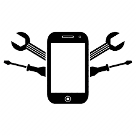

Servicios
 Mantenimiento de Computadoras: Limpieza de hardware, instalación de software, actualizaciones.
Mantenimiento de Computadoras: Limpieza de hardware, instalación de software, actualizaciones.- Reparación de Teléfonos: Cambio de pantallas, reparación de puertos, sustitución de baterías.
- Optimización de Sistemas: Acelera el rendimiento de tus dispositivos.
- Recuperación de Datos: Recuperación de archivos eliminados o perdidos.